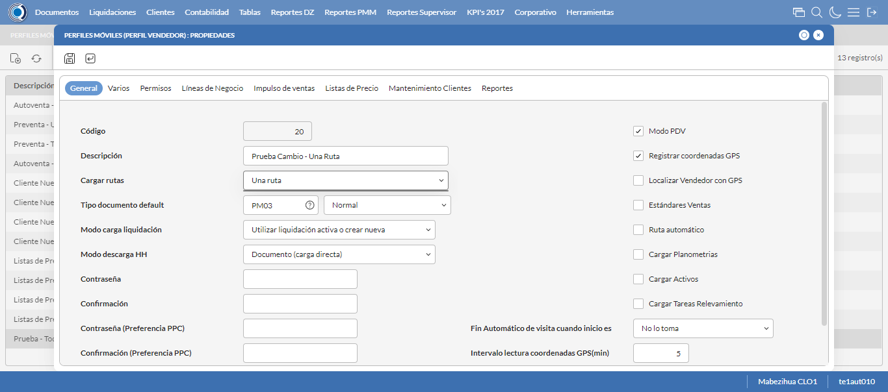

Desarrollado por : Area de Testing PWST
Fecha y hora de inicio : 2023-02-23 13:13:31
Duracion : 0:02:09.898370
Resultado : Total 8，Correctos 7 ，Errores 1 ，Taza de resultado 87.50%
Resumen 87.50% Errores 1 Fallidos 0 Correctos 7 Test realizados 8
| Caso de Prueba | Total | Correctos | Fallido | Error | Detalles | Captura del error |
| PerfilesMoviles.Test: Escenario 1 de Perfiles Moviles | 8 | 7 | 0 | 1 | Detalles | |
test |
ft1_1: 2023-02-23 13:13:33,531 - root - INFO - Se abre el chrome
2023-02-23 13:13:34,534 - root - INFO - Entra a la URL
2023-02-23 13:13:34,715 - root - INFO - Maximiza la pantalla
Traceback (most recent call last):
File "C:\Users\gerar\AppData\Local\Programs\Python\Python311\Lib\site-packages\selenium\webdriver\remote\switch_to.py", line 88, in frame
frame_reference = self._driver.find_element(By.ID, frame_reference)
^^^^^^^^^^^^^^^^^^^^^^^^^^^^^^^^^^^^^^^^^^^^^^^^^
File "C:\Users\gerar\AppData\Local\Programs\Python\Python311\Lib\site-packages\selenium\webdriver\remote\webdriver.py", line 861, in find_element
return self.execute(Command.FIND_ELEMENT, {"using": by, "value": value})["value"]
^^^^^^^^^^^^^^^^^^^^^^^^^^^^^^^^^^^^^^^^^^^^^^^^^^^^^^^^^^^^^^^^^
File "C:\Users\gerar\AppData\Local\Programs\Python\Python311\Lib\site-packages\selenium\webdriver\remote\webdriver.py", line 444, in execute
self.error_handler.check_response(response)
File "C:\Users\gerar\AppData\Local\Programs\Python\Python311\Lib\site-packages\selenium\webdriver\remote\errorhandler.py", line 249, in check_response
raise exception_class(message, screen, stacktrace)
selenium.common.exceptions.NoSuchElementException: Message: no such element: Unable to locate element: {"method":"css selector","selector":"[id="mainFrame"]"}
(Session info: chrome=110.0.5481.104)
Stacktrace:
Backtrace:
(No symbol) [0x007237D3]
(No symbol) [0x006B8B81]
(No symbol) [0x005BB36D]
(No symbol) [0x005ED382]
(No symbol) [0x005ED4BB]
(No symbol) [0x00623302]
(No symbol) [0x0060B464]
(No symbol) [0x00621215]
(No symbol) [0x0060B216]
(No symbol) [0x005E0D97]
(No symbol) [0x005E253D]
GetHandleVerifier [0x0099ABF2+2510930]
GetHandleVerifier [0x009C8EC1+2700065]
GetHandleVerifier [0x009CC86C+2714828]
GetHandleVerifier [0x007D3480+645344]
(No symbol) [0x006C0FD2]
(No symbol) [0x006C6C68]
(No symbol) [0x006C6D4B]
(No symbol) [0x006D0D6B]
BaseThreadInitThunk [0x762B7D69+25]
RtlInitializeExceptionChain [0x777FBB9B+107]
RtlClearBits [0x777FBB1F+191]
During handling of the above exception, another exception occurred:
Traceback (most recent call last):
File "C:\Users\gerar\AppData\Local\Programs\Python\Python311\Lib\site-packages\selenium\webdriver\remote\switch_to.py", line 91, in frame
frame_reference = self._driver.find_element(By.NAME, frame_reference)
^^^^^^^^^^^^^^^^^^^^^^^^^^^^^^^^^^^^^^^^^^^^^^^^^^^
File "C:\Users\gerar\AppData\Local\Programs\Python\Python311\Lib\site-packages\selenium\webdriver\remote\webdriver.py", line 861, in find_element
return self.execute(Command.FIND_ELEMENT, {"using": by, "value": value})["value"]
^^^^^^^^^^^^^^^^^^^^^^^^^^^^^^^^^^^^^^^^^^^^^^^^^^^^^^^^^^^^^^^^^
File "C:\Users\gerar\AppData\Local\Programs\Python\Python311\Lib\site-packages\selenium\webdriver\remote\webdriver.py", line 444, in execute
self.error_handler.check_response(response)
File "C:\Users\gerar\AppData\Local\Programs\Python\Python311\Lib\site-packages\selenium\webdriver\remote\errorhandler.py", line 249, in check_response
raise exception_class(message, screen, stacktrace)
selenium.common.exceptions.NoSuchElementException: Message: no such element: Unable to locate element: {"method":"css selector","selector":"[name="mainFrame"]"}
(Session info: chrome=110.0.5481.104)
Stacktrace:
Backtrace:
(No symbol) [0x007237D3]
(No symbol) [0x006B8B81]
(No symbol) [0x005BB36D]
(No symbol) [0x005ED382]
(No symbol) [0x005ED4BB]
(No symbol) [0x00623302]
(No symbol) [0x0060B464]
(No symbol) [0x00621215]
(No symbol) [0x0060B216]
(No symbol) [0x005E0D97]
(No symbol) [0x005E253D]
GetHandleVerifier [0x0099ABF2+2510930]
GetHandleVerifier [0x009C8EC1+2700065]
GetHandleVerifier [0x009CC86C+2714828]
GetHandleVerifier [0x007D3480+645344]
(No symbol) [0x006C0FD2]
(No symbol) [0x006C6C68]
(No symbol) [0x006C6D4B]
(No symbol) [0x006D0D6B]
BaseThreadInitThunk [0x762B7D69+25]
RtlInitializeExceptionChain [0x777FBB9B+107]
RtlClearBits [0x777FBB1F+191]
During handling of the above exception, another exception occurred:
Traceback (most recent call last):
File "C:\xampp\htdocs\versiones\automatizaciones\AutoPWST\01PM\testCase\PerfilesMoviles.py", line 30, in test
self.driver.switch_to.frame("mainFrame")
File "C:\Users\gerar\AppData\Local\Programs\Python\Python311\Lib\site-packages\selenium\webdriver\remote\switch_to.py", line 93, in frame
raise NoSuchFrameException(frame_reference)
selenium.common.exceptions.NoSuchFrameException: Message: mainFrame
|
|
||||
test_000: Ingresa a la base de datos |
pt1_2: 2023-02-23 13:13:37,843 - root - INFO - Escribe el usuario
2023-02-23 13:13:37,940 - root - INFO - Escribe la contraseña
2023-02-23 13:13:38,033 - root - INFO - Se dio clic en el boton ingresar
2023-02-23 13:13:39,807 - root - INFO - Ejecutar Enterprise
2023-02-23 13:13:43,871 - root - INFO - Cambia entre pestañas
|
|
||||
test_001: Abre menu y ejecuta pantalla |
pt1_3: 2023-02-23 13:13:55,415 - root - INFO - Abre la pantalla de Perfiles Moviles
2023-02-23 13:13:55,979 - root - INFO - La pantalla ejecutada es Perfiles Moviles
2023-02-23 13:13:55,980 - root - INFO - Captura: C:\xampp\htdocs\versiones\automatizaciones\AutoPWST\01PM\report\img screen：20230223_13_13_55.png
2023-02-23 13:13:56,122 - root - INFO - Se presiona el boton 'Nuevo', para crear un nuevo registro.
|

|
||||
test_002: Abre la ventana de nuevo y crear un registro |
pt1_4: 2023-02-23 13:13:56,673 - root - INFO - Se abrio la pantalla para el ingreso de un registro nuevo.
2023-02-23 13:13:56,728 - root - INFO - Ingresa el codigo del nuevo registro
2023-02-23 13:13:56,854 - root - INFO - Ingresa la Descripcion del nuevo registro
2023-02-23 13:13:57,233 - root - INFO - Se selecciono la opción Todas las Rutas
2023-02-23 13:13:57,319 - root - INFO - Ingresa el Tipo documento default del nuevo registro
2023-02-23 13:13:57,686 - root - INFO - Se selecciono la opción Normal
2023-02-23 13:13:58,153 - root - INFO - Se selecciono el registro de Modo carga liquidación
2023-02-23 13:13:58,514 - root - INFO - Se selecciono la opción Documento (carga directa)
2023-02-23 13:13:58,582 - root - INFO - Se dió click en el checkbox Modo PDV
2023-02-23 13:13:58,650 - root - INFO - Se dió click en el checkbox Registrar coordenadas GPS
2023-02-23 13:13:59,013 - root - INFO - Se dió click en la opción No lo toma
2023-02-23 13:13:59,082 - root - INFO - Ingresa el Intervalo lectura coordenadas GPS(min) del nuevo registro
2023-02-23 13:13:59,082 - root - INFO - Captura: C:\xampp\htdocs\versiones\automatizaciones\AutoPWST\01PM\report\img screen：20230223_13_13_59.png
2023-02-23 13:14:01,298 - root - INFO - Se hace el cambio de pestaña Varios para continuar con el registro nuevo
2023-02-23 13:14:01,362 - root - INFO - Se dió click en el checkbox Cargar resumen de cuentas únicamente del vendedor de la ruta
2023-02-23 13:14:01,428 - root - INFO - Se dió click en el checkbox Verificar límite de crédito
2023-02-23 13:14:01,492 - root - INFO - Se dió click en el checkbox Verificar opción 'guardar como' del tipo de documento
2023-02-23 13:14:01,552 - root - INFO - Se dió click en el checkbox Permitir Pagos
2023-02-23 13:14:02,637 - root - INFO - Se dió click en el botón espacio para mover la pantalla hacía abajo
2023-02-23 13:14:04,011 - root - INFO - Se selecciono el registro de Disco de Datos
2023-02-23 13:14:04,392 - root - INFO - Se dió click en la opción Autoventa
2023-02-23 13:14:04,464 - root - INFO - Se dió click en el checkbox Enviar documentos de inmediato al servidor.
2023-02-23 13:14:04,531 - root - INFO - Se hace el cambio a la pestaña Permisos para continuar con el registro nuevo
2023-02-23 13:14:05,112 - root - INFO - Se presiona el boton 'Nuevo de la pestaña Permiso' , para crear un nuevo registro.
2023-02-23 13:14:06,554 - root - INFO - Se dió click en la opción Inihibir Georeferenciación
2023-02-23 13:14:06,624 - root - INFO - Se presiona el boton 'Guardar de la pestaña Permiso', para guardar el registro.
2023-02-23 13:14:06,935 - root - INFO - Se presiona el boton 'Nuevo de la pestaña Permiso' , para crear un nuevo registro.
2023-02-23 13:14:07,863 - root - INFO - Se dió click en la opción Anular Documentos
2023-02-23 13:14:07,961 - root - INFO - Se presiona el boton 'Guardar de la pestaña Permiso', para guardar el registro.
2023-02-23 13:14:08,451 - root - INFO - Se hace el cambio a la pestaña Lineas de Negocio para continuar con el registro nuevo
2023-02-23 13:14:09,032 - root - INFO - Se presiona el boton 'Nuevo de la pestaña Permiso' , para crear un nuevo registro.
2023-02-23 13:14:10,510 - root - INFO - Se selecciono el registro de Linea de negocio
2023-02-23 13:14:11,129 - root - INFO - Se presiona el boton 'Guardar de la pestaña Linea de Negocio', para guardar el registro.
2023-02-23 13:14:11,412 - root - INFO - Se presiona el boton 'Nuevo de la pestaña Permiso' , para crear un nuevo registro.
2023-02-23 13:14:12,914 - root - INFO - Se selecciono el registro de Linea de negocio
2023-02-23 13:14:13,588 - root - INFO - Se presiona el boton 'Guardar de la pestaña Linea de Negocio', para guardar el registro.
2023-02-23 13:14:13,925 - root - INFO - Se presiona el boton 'Nuevo de la pestaña Permiso' , para crear un nuevo registro.
2023-02-23 13:14:15,406 - root - INFO - Se selecciono el registro de Linea de negocio
2023-02-23 13:14:16,068 - root - INFO - Se presiona el boton 'Guardar de la pestaña Linea de Negocio', para guardar el registro.
2023-02-23 13:14:16,460 - root - INFO - Se hace el cambio a la pestaña Impulso Ventas para continuar con el registro nuevo
2023-02-23 13:14:17,041 - root - INFO - Se presiona el boton 'Nuevo de la pestaña Impulso de Ventas' , para crear un nuevo registro.
2023-02-23 13:14:17,616 - root - INFO - Ingresa el Articulo del nuevo registro
2023-02-23 13:14:19,723 - root - INFO - Se presiona el boton 'Guardar de la pestaña Impulso de Ventas', para guardar el registro.
2023-02-23 13:14:21,770 - root - INFO - Se presiona el boton 'Nuevo de la pestaña Impulso de Ventas' , para crear un nuevo registro.
2023-02-23 13:14:22,452 - root - INFO - Ingresa el Articulo del nuevo registro
2023-02-23 13:14:24,701 - root - INFO - Se presiona el boton 'Guardar de la pestaña Impulso de Ventas', para guardar el registro.
2023-02-23 13:14:26,779 - root - INFO - Se presiona el boton 'Nuevo de la pestaña Impulso de Ventas' , para crear un nuevo registro.
2023-02-23 13:14:27,497 - root - INFO - Ingresa el Articulo del nuevo registro
2023-02-23 13:14:29,727 - root - INFO - Se presiona el boton 'Guardar de la pestaña Impulso de Ventas', para guardar el registro.
2023-02-23 13:14:31,773 - root - INFO - Se presiona el boton 'Nuevo de la pestaña Impulso de Ventas' , para crear un nuevo registro.
2023-02-23 13:14:32,524 - root - INFO - Ingresa el Articulo del nuevo registro
2023-02-23 13:14:35,024 - root - INFO - Se presiona el boton 'Guardar de la pestaña Impulso de Ventas', para guardar el registro.
2023-02-23 13:14:37,070 - root - INFO - Se presiona el boton 'Nuevo de la pestaña Impulso de Ventas' , para crear un nuevo registro.
2023-02-23 13:14:37,821 - root - INFO - Ingresa el Articulo del nuevo registro
2023-02-23 13:14:40,154 - root - INFO - Se presiona el boton 'Guardar de la pestaña Impulso de Ventas', para guardar el registro.
2023-02-23 13:14:42,211 - root - INFO - Se hace el cambio a la pestaña Mantenimiento Clientes para continuar con el registro nuevo
2023-02-23 13:14:42,918 - root - INFO - Se dió click en el checkbox Permiso agregar nuevos clientes
2023-02-23 13:14:42,986 - root - INFO - Se dió click en el checkbox Permiso modificar clientes existentes
2023-02-23 13:14:44,170 - root - INFO - Se selecciono el registro de Ruta Referencia
2023-02-23 13:14:44,367 - root - INFO - Se dió click en el checkbox Clasificación 1
2023-02-23 13:14:44,484 - root - INFO - Se dió click en el checkbox Clasificación 2
2023-02-23 13:14:44,626 - root - INFO - Se dió click en el checkbox Clasificación 3
2023-02-23 13:14:44,761 - root - INFO - Se dió click en el checkbox Colonia
2023-02-23 13:14:44,926 - root - INFO - Se dió click en el checkbox Codigo Postal
2023-02-23 13:14:45,076 - root - INFO - Se dió click en el checkbox Direccion
2023-02-23 13:14:45,215 - root - INFO - Se dió click en el checkbox Entorno PDV
2023-02-23 13:14:45,385 - root - INFO - Se dió click en el checkbox Esquina 1
2023-02-23 13:14:45,556 - root - INFO - Se dió click en el checkbox Esquina 2
2023-02-23 13:14:45,697 - root - INFO - Se dió click en el checkbox Paises
2023-02-23 13:14:45,859 - root - INFO - Se dió click en el checkbox Departamento
2023-02-23 13:14:46,031 - root - INFO - Se dió click en el checkbox Localidad
2023-02-23 13:14:46,195 - root - INFO - Se da clic en el boton Guardar; se debe crear un nuevo registro.
|
|||||
test_003: Repite el Registro |
pt1_5: 2023-02-23 13:14:46,846 - root - INFO - Se presiona el boton 'Refrescar', para crear un nuevo registro igual al anterior.
2023-02-23 13:14:48,905 - root - INFO - Se presiona el boton 'Nuevo', para crear un nuevo registro igual al anterior.
2023-02-23 13:14:49,974 - root - INFO - Se abrio la pantalla para el ingreso de un registro nuevo.
2023-02-23 13:14:50,035 - root - INFO - Ingresa el codigo del nuevo registro
2023-02-23 13:14:50,170 - root - INFO - Ingresa la Descripcion del nuevo registro
2023-02-23 13:14:50,546 - root - INFO - Se selecciono la opción Todas las Rutas
2023-02-23 13:14:50,644 - root - INFO - Ingresa el Tipo documento default del nuevo registro
2023-02-23 13:14:51,041 - root - INFO - Se selecciono la opción Normal
2023-02-23 13:14:51,538 - root - INFO - Se selecciono el registro de Modo carga liquidación
2023-02-23 13:14:52,216 - root - INFO - Se selecciono la opción Documento (carga directa)
2023-02-23 13:14:52,285 - root - INFO - Se dió click en el checkbox Modo PDV
2023-02-23 13:14:52,351 - root - INFO - Se dió click en el checkbox Registrar coordenadas GPS
2023-02-23 13:14:52,729 - root - INFO - Se dió click en la opción No lo toma
2023-02-23 13:14:52,821 - root - INFO - Ingresa el Intervalo lectura coordenadas GPS(min) del nuevo registro
2023-02-23 13:14:54,923 - root - INFO - Se da clic en el boton Guardar; NO se debe crear un nuevo registro.
2023-02-23 13:14:57,042 - root - INFO - Se da clic en el boton del mensaje de registro duplicado
2023-02-23 13:14:59,045 - root - INFO - Captura: C:\xampp\htdocs\versiones\automatizaciones\AutoPWST\01PM\report\img screen：20230223_13_14_59.png
2023-02-23 13:14:59,233 - root - INFO - Se presiona el boton 'Cerrar', para cerrar el mensaje de duplicidad de llave primaria
2023-02-23 13:14:59,556 - root - INFO - Se presiona el boton 'Cerrar', para cerrar la ventana
|
|||||
test_004: Modificar el registro |
pt1_6: 2023-02-23 13:14:59,751 - root - INFO - Se presiona el boton 'Refrescar', para proceder a modificar el registro.
2023-02-23 13:15:02,320 - root - INFO - Se da clic en el registro creado, para proceder a modificarlo.
2023-02-23 13:15:03,069 - root - INFO - Se modifica el contenido del campo Observaciones 1
2023-02-23 13:15:03,474 - root - INFO - Se selecciono la opción Una Ruta
2023-02-23 13:15:03,475 - root - INFO - Captura: C:\xampp\htdocs\versiones\automatizaciones\AutoPWST\01PM\report\img screen：20230223_13_15_03.png
2023-02-23 13:15:03,649 - root - INFO - Se hace el cambio de pestaña Permisos para continuar con la modificación del registro
2023-02-23 13:15:03,844 - root - INFO - Se hace el cambio a la pestaña Lineas de Negocio para continuar con la modificación del registro
2023-02-23 13:15:04,056 - root - INFO - Se da clic en el boton Guardar; se debe modificar la informacion del registro.
|
 | ||||
test_005: Eliminar el registro creado |
pt1_7: 2023-02-23 13:15:06,106 - root - INFO - Se presiona el boton 'Refrescar', para proceder a eliminar el registro.
2023-02-23 13:15:08,685 - root - INFO - Se da clic en el registro creado, para proceder a eliminarlo.
2023-02-23 13:15:09,846 - root - INFO - Se hace el cambio de pestaña Permisos para continuar con la eliminación del registro
2023-02-23 13:15:10,912 - root - INFO - Se da clic en el primer registro de Permisos, para proceder a eliminarlo.
2023-02-23 13:15:10,964 - root - INFO - Se presiona el boton 'Eliminar de Permiso', para eliminar el segundo registro.
2023-02-23 13:15:12,520 - root - INFO - Se da clic en el segundo registro de Permisos, para proceder a Eliminarlo.
2023-02-23 13:15:12,560 - root - INFO - Se presiona el boton 'Eliminar de Permiso', para eliminar el segundo registro.
2023-02-23 13:15:13,636 - root - INFO - Se hace el cambio a la pestaña Lineas de Negocio para continuar con la eliminación del registro
2023-02-23 13:15:14,709 - root - INFO - Se da clic en el primer registro de Linea de Negocio, para proceder a Eliminarlo.
2023-02-23 13:15:14,773 - root - INFO - Se presiona el boton 'Eliminar de Linea de Negocio', para eliminar el primer registro.
2023-02-23 13:15:16,333 - root - INFO - Se da clic en el segundo registro Linea de negocio, para proceder a Eliminarlo.
2023-02-23 13:15:16,381 - root - INFO - Se presiona el boton 'Eliminar de Linea de Negocio', para eliminar el segundo registro.
2023-02-23 13:15:17,950 - root - INFO - Se da clic en el tercer registro Lineas de Negocio, para proceder a Eliminarlo.
2023-02-23 13:15:17,992 - root - INFO - Se presiona el boton 'Eliminar de Linea de Negocio', para eliminar el tercer registro.
2023-02-23 13:15:19,054 - root - INFO - Se hace el cambio de pestaña Impulso Ventas para continuar con la modificación del registro
2023-02-23 13:15:20,123 - root - INFO - Se da clic en el registro creado, para proceder a modificarlo.
2023-02-23 13:15:20,172 - root - INFO - Se presiona el boton 'Eliminar de Impulso Ventas', para eliminar el primer registro.
2023-02-23 13:15:21,736 - root - INFO - Se da clic en el registro creado, para proceder a modificarlo.
2023-02-23 13:15:21,786 - root - INFO - Se presiona el boton 'Eliminar de Impulso Ventas', para eliminar el segundo registro.
2023-02-23 13:15:23,346 - root - INFO - Se da clic en el registro creado, para proceder a modificarlo.
2023-02-23 13:15:23,389 - root - INFO - Se presiona el boton 'Eliminar de Impulso Ventas', para eliminar el tercer registro.
2023-02-23 13:15:24,949 - root - INFO - Se da clic en el registro creado, para proceder a modificarlo.
2023-02-23 13:15:24,990 - root - INFO - Se presiona el boton 'Eliminar de Impulso Ventas', para eliminar el cuarto registro.
2023-02-23 13:15:26,546 - root - INFO - Se da clic en el registro creado, para proceder a modificarlo.
2023-02-23 13:15:26,585 - root - INFO - Se presiona el boton 'Eliminar de Impulso Ventas', para eliminar el quinto registro.
2023-02-23 13:15:27,642 - root - INFO - Se hace el cambio a la pestaña Mantenimiento Clientes para continuar con la eliminación del registro
2023-02-23 13:15:28,243 - root - INFO - Se dió click en el checkbox Clasificación 1
2023-02-23 13:15:28,559 - root - INFO - Se dió click en el checkbox Clasificación 2
2023-02-23 13:15:28,746 - root - INFO - Se dió click en el checkbox Clasificación 3
2023-02-23 13:15:28,856 - root - INFO - Se dió click en el checkbox Colonia
2023-02-23 13:15:29,081 - root - INFO - Se dió click en el checkbox Codigo Postal
2023-02-23 13:15:29,234 - root - INFO - Se dió click en el checkbox Direccion
2023-02-23 13:15:29,387 - root - INFO - Se dió click en el checkbox Entorno PDV
2023-02-23 13:15:29,530 - root - INFO - Se dió click en el checkbox Esquina 1
2023-02-23 13:15:29,697 - root - INFO - Se dió click en el checkbox Esquina 2
2023-02-23 13:15:29,843 - root - INFO - Se dió click en el checkbox Paises
2023-02-23 13:15:29,999 - root - INFO - Se dió click en el checkbox Departamento
2023-02-23 13:15:30,167 - root - INFO - Se dió click en el checkbox Localidad
2023-02-23 13:15:30,275 - root - INFO - Se da clic en el boton Guardar; se debe modificar la informacion del registro.
2023-02-23 13:15:30,876 - root - INFO - Se da clic en el registro creado, para proceder a eliminarlo.
2023-02-23 13:15:30,938 - root - INFO - Se presiona el boton 'Eliminar', para eliminar el registro.
2023-02-23 13:15:32,939 - root - INFO - Captura: C:\xampp\htdocs\versiones\automatizaciones\AutoPWST\01PM\report\img screen：20230223_13_15_32.png
2023-02-23 13:15:33,094 - root - INFO - Se confirma el eliminado del registro
2023-02-23 13:15:33,409 - root - INFO - Se presiona el boton 'Refrescar', para verificar si el registro ha sido eliminado.
2023-02-23 13:15:35,461 - root - INFO - Se presiona el boton 'Cerrar', para cerrar la pantalla de Perfiles Moviles.
|

|
||||
test_006: Cerrar_Navegador |
pt1_8: 2023-02-23 13:15:41,836 - root - INFO - Se cierra chrome
|
|
||||
| Caso de prueba | 8 | 7 | 0 | 1 | Taza de resultado：87.50% | |